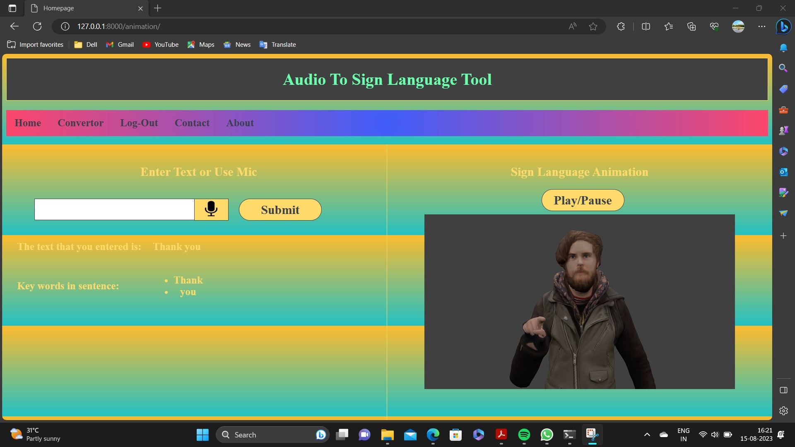

Communication difficulties between deaf people and those unfamiliar with sign language pose significant challenges. Existing methods are largely hardware-based, costly, and inefficient.
This project leverages NLP and AI to create a system that converts text to Indian Sign Language using manual and non-manual signs. It aims to provide an affordable, adaptable, and user-friendly solution.
The prototype successfully translates English to ISL, bridging the communication gap between deaf individuals and others. The system is efficient, scalable, and deployable across multiple platforms.
As a core team member, I contributed to the development of the system by implementing the natural language processing (NLP) logic and integrating it with the sign language translation. I also worked on the database management using SQL and ensured smooth functionality across the platform, handling testing and debugging of the system's voice recognition features.
The Personal Voice Assistant for Deaf is a solution designed to help hearing-impaired individuals communicate effectively through sign language recognition. It addresses the gap between normal people and those with impairments by translating English text into Indian Sign Language (ISL). This project was developed using Python, NLP, and various libraries, and tested on mobile/laptop devices with a microphone and internet for voice recognition.
